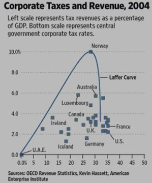
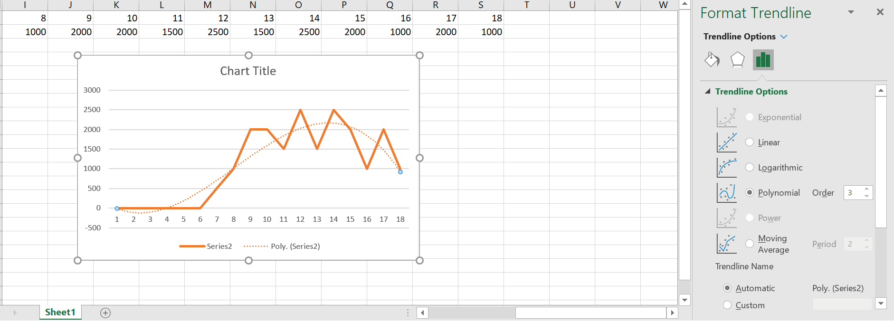
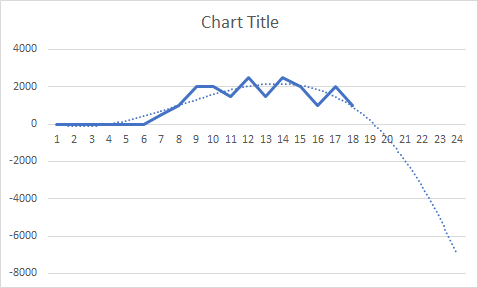

Reflections on the Worst Covid Graph
Once again, I’m late to the discussion on this. In fairness I am doing my Finals and as long as they are still hanging over my head I think this blog will be behind the times.
The Graph
Earlier this week the White House Council of Economic Advisers tweeted out this graph:
To better visualize observed data, we also continually update a curve-fitting exercise to summarize COVID-19's observed trajectory. Particularly with irregular data, curve fitting can improve data visualization. As shown, IHME's mortality curves have matched the data fairly well. pic.twitter.com/NtJcOdA98R
— CEA45 Archived (@WhiteHouseCEA45) May 5, 2020
The Man behind the Graph
This Grpah was posted on the Twitter account of the White House Council of Economic Advisors. However, this graph wasn’t made by just any economic advisor, it was made by Kevin Hasset. Kevin Hasset has been an economist in Republican circles since advising John McCain on his run for the presidency in 2000. He famously wrote a book Dow 36,000 in 1999 that predicted a massive upward swing in the Stock Market and less than a year later the dot-com bubble burst, causing a huge fall in the stock market.
He also famously produced this egregious graph on the laffer curve:

Safe to say whether it be corporation tax rates or Coronavirus deaths, Kevin Hasset has a wealth of experience in manipulating data to suit his or his party’s political beliefs. Recently Kevin was drafted into the White House as a senior advisor to work on the government’s response to the Coronavirus pandemic, despite having no experience in infectious disease modelling or public health.
Back to the Graph
First of all the obvious: the graph is incredibly hard to read. There are three seperate projections from the same model, stiched on top of the “cubic fit” and the raw data. It’s not entirely clear why the CEA decided to add three seperate projections from seemingly random dates onto the Graph.
“Cubit Fit”
If you are wondering what a cubic fit is you aren’t the only one. It turns out the cubic fit was simply a basic trendline function in Excel. Let’s explore how this works. I’ve loaded up Excel and I’ve made a very basic copy of the Covid Deaths data that more or less follows the shape of the curve. Then I right click, add trendline and click polynomial of order three and there you have it, my own cubic fit:

But Why Cubic Fits?
There is simply no scentific reason for such a trendline, the only possible reason I could think of is that of all the trendline options that Excel gives you, a polynomial of order 3 gives you the steepest drop in deaths.
This would also explain why out of date predictions from the IHME model were included in the graph. It’s likely that this visual wizardy was done to mask the fact that the latest IMHE projection (5/4) does not show the curve flattening for at least around two months.
In order to mask this incovenient fact, the folks at CEA added earlier projections to the graph. When they decided that wasn’t convincing enough they decided to add the “cubic fit” to really drive home the point that the latest projection from the IMHE model is the outlier and that everything is under control.
Of course, in reality the latest projection from the IMHE model is the closest thing there is to an accurate projection on this graph.
Does the Cubic fit ?
Some commentators noticed that if you follow the red line of the cubic fit it starts as a thick red dashed line and then tranforms into a pink dotted line. This is likely done to stop the trendline from going into negative deaths, let’s see what happens if we extend our cubic fit trendline a few days into the future:

As you can see, it quickly goes into the negatives. It’s very likely that the CEA ran into exactly the same problem and simply erased the line as it went negative and pencilled in their own one over the top. If that is the case then Hasset, instead the idea of manipulating the data, decided to just make it up entirely.
IHME Projections
Even the IHME projection is concerning. The model is often cited by the White House for various reasons ( which this excellent Vox piece explores). However, the IMHE model has consistently underestimated the death toll. One analysis found that the model’s death toll fell preditions were fell outside the model’s range 70 % of the time.
Overall
The bottom line is this graph is incredibly misleading and deliberately so. It is far removed from the the government’s own draft reports which predict 200,000 cases a day by June 1. It’s concerning that members of the White House are putting out misinformation to the public that puts people’s very lives at risk.